Pin your Claude Code, Codex & Antigravity quota to the menu bar.
A tiny menu bar app for macOS — and system tray app for Windows — that shows how much of your AI quota is left, like a battery percentage for tokens. No LLM API calls, so watching your quota never costs you tokens.
No LLM API calls — watching quota never costs tokens
Local-first — Claude Code & Codex read straight from your disk
No telemetry, no accounts, no cloud
Built for developers who burn tokens.
Stop guessing if you're about to hit the rate limit mid-refactor.
5-hour & 7-day quota at a glance
Both Claude Code session (5h) and weekly (7d) percentages live in the menu bar. Click for a full popover with per-project usage and cost.
Claude Code, Codex & Antigravity, one app
Track Anthropic, OpenAI, and Google quota side by side. Codex is auto-detected from ~/.codex/sessions/ with no setup; Antigravity uses the sign-in its own CLI already stores.
Local-first by design
Claude Code and Codex numbers come from files already on your disk — a statusLine hook status file plus Codex session JSONL logs — with no network access at all. Antigravity quota is fetched from Google using the credential its own CLI stores. Every outbound request is listed in SECURITY.md.
One-click HTML reports
Today, week, month, or all-time — get a shareable HTML report with token / cost trends, top projects, and model breakdown. Project names hide by default for client-safe sharing.
10 visual panel themes
Matrix digital rain, Windows 95, retro newspaper, midnight aquarium, World Cup FIFA HUD, Lepidoptera blueprint — pick a mood for your menu bar pop-out.
AI Talent Market
Install a curated team of Claude Code subagent personas — a one-person law practice, a solo software studio, and more — straight into ~/.claude/agents/, then call one by name in your next conversation.
Terse Mode
A menu-bar toggle that asks Claude Code — and Codex CLI too, if it's installed — to answer more tersely for the whole session: same substance, fewer words, while code, commands, and error messages stay byte-exact.
Notifications before you hit the wall
When your context window hits 70%, the status line nudges you to /clear or /compact to prevent token waste. You can also opt-in to system notifications for quota limits and recoveries.
AI Council
Run a multi-round discussion between Claude Code, Codex, and Antigravity on one topic. Pick who joins, which model each one uses, and how many rounds — with a token estimate shown before you start.
PROGRESS CONCIERGE
Now your CLI picks up where you left off
The web and desktop apps keep your history automatically — close them, reopen, it's all there. The CLI keeps it too, but you need to know the command to pull it back up. Resume makes that automatic: open a new session and it picks up where you left off, no command to remember, no re-explaining. It now also runs a daily health check on your logs — when it spots token waste, the handoff adds a one-line heads-up; say "show me" for the findings and fixes. Reads local files only — never connects to any API.
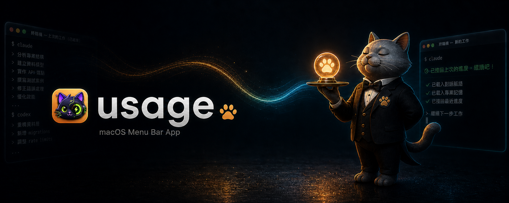
Auto-resumes your last progress
Daily health check flags token waste
Reads local files only
Install in 10 seconds.
Three ways to get it running. All free, all AGPL-3.0.
RECOMMENDED
Homebrew
One command. brew upgrade keeps it current.
brew install --cask aqua5230/usage/usage
DIRECT
Download .app
Latest usage.app.zip from GitHub Releases — unzip, drag to /Applications.
Ten built-in themes. Change anytime from the popover toolbar.
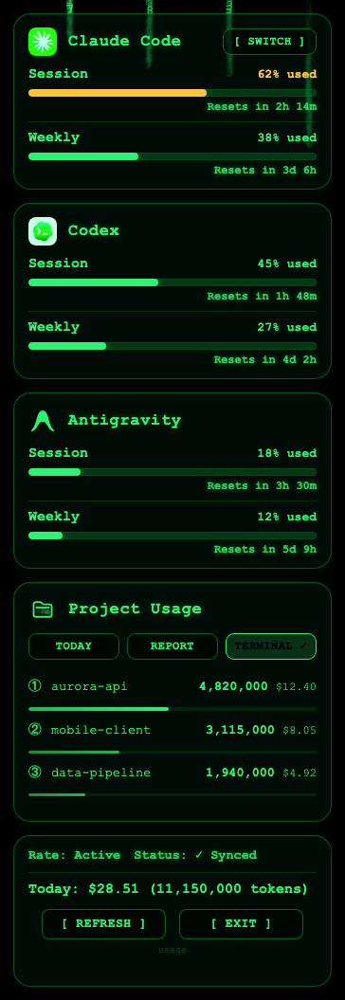
matrix
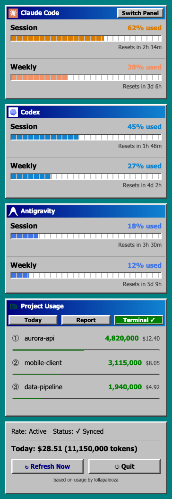
win95
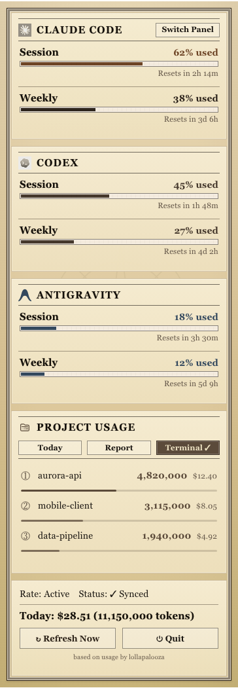
newspaper
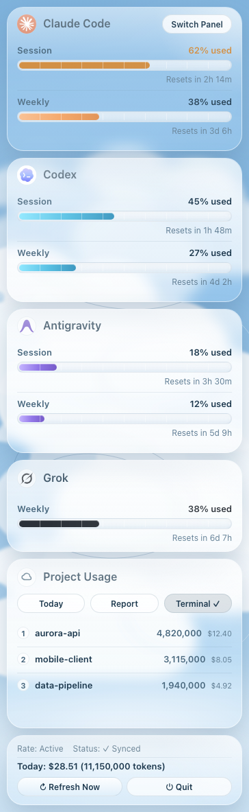
cloud_observation
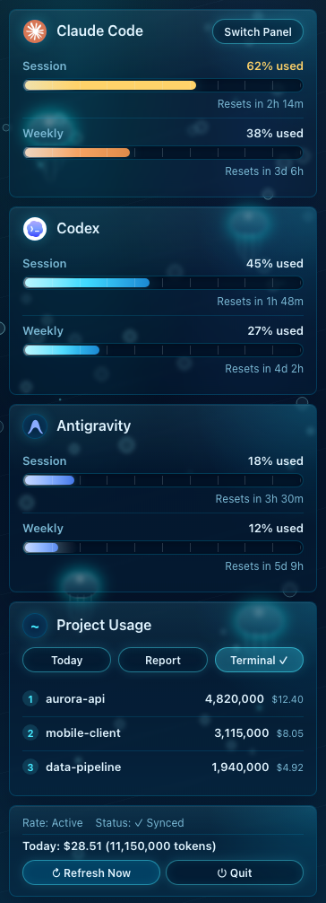
aquarium
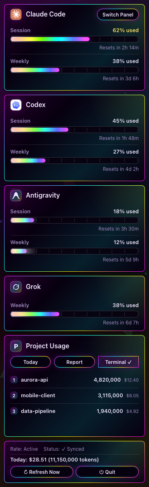
prism_arcade
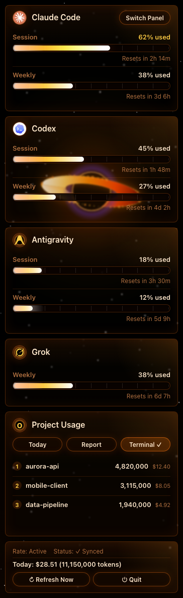
black_hole
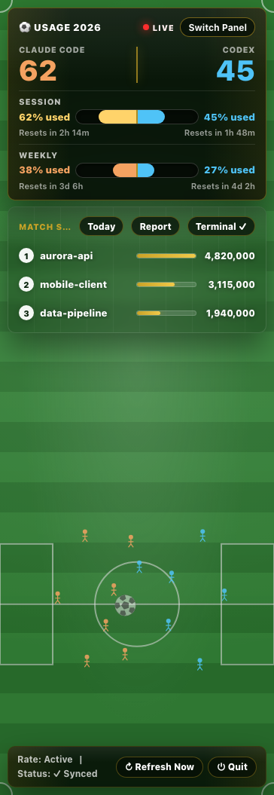
world_cup
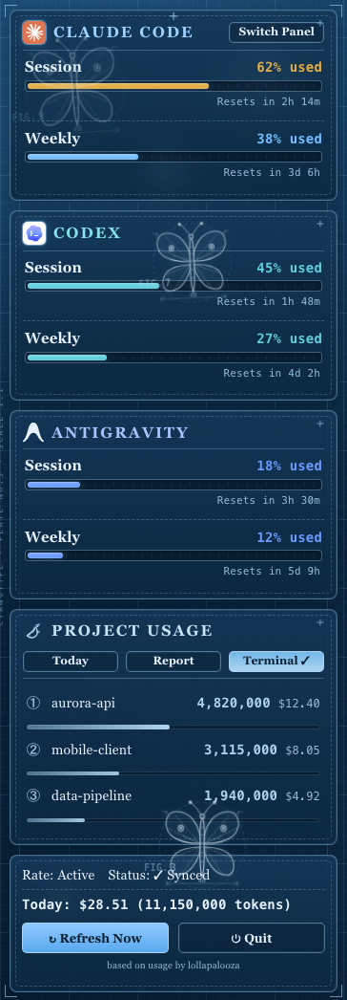
lepidoptera
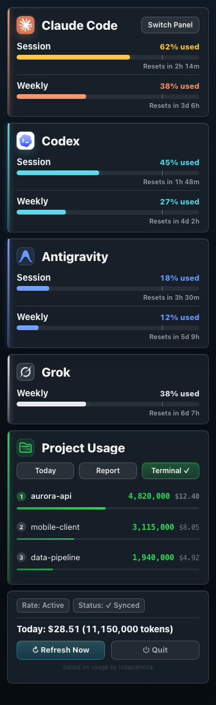
classic
Your AI usage, in one shareable page.
Generate an HTML report with token spend, cost, top projects, and model distribution — plus an AI Tool Update Digest summarizing recent changes, and a year-in-review page with a GitHub-style contribution heatmap and a "Wrapped" card. Send to your manager. Use as a client invoice attachment. Project names hide by default.